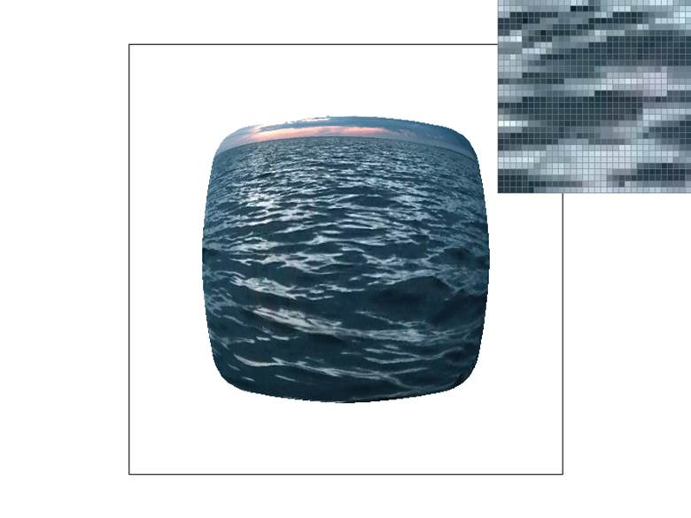

Overview
In this project I learned how triangles are rasterized into a flat picture, as well as antialiasing techniques including supersampling, pixel sampling, and level sampling. Relative mathematic tools like matrix transformation and barycentric coordinates are also put into application in the meantime.
Task 1 Drawing Single-Color Triangles
How did I print those triangles?
· I wrote two helper functions line_test() and inside() to determine if a point is inside a triangle. line_test() implements the line test function I learned in lecture 2. inside() determines if a point is inside the given triangle. During the implementation, I noticed that line test function taught in lecture works differently on clockwise vertices, compared to counterclockwise vertices. I had to do a small modification in my inside() function: if a point appears to be “outside” of every edge of a triangle, then it is actually inside the edges, where I can deduce the fact that edge must be in clockwise direction.
· Equipped with inside(), I could intuitively traverse every single sample point in the rectangle that bounds the triangle to be rendered, check if the sample point is inside the triangle, and render it with the correct color. I tested this unoptimized algorithm on svg/basic/test4.svg and the time spent rendering it is 4.96ms.
· I came up with a slightly optimized algorithm – instead of traversing every sample point within a row, I stop scanning new sample points once a row is out of “inside” points. Let me illustrate this by an example - consider a triangle like this:
00000001000000000
00001111111000000
00111111111111100
An obvious pattern of any triangle is that sample points inside the triangle are consecutive. I can simply stop sampling and begin from next row whenever I see an “outside” after seen some “inside” points in each row. Thus, instead of sampling every point, now I just sample some of them:
00000001xxxxxxxxx
00001111111xxxxxx
001111111111111xx
where “x” stands for points been skipped. This slightly optimized algorithm did slightly better on svg/basic/test4.svg and the time spent is 3.82ms, which is a 1.3x speedup. Note that in my actual implementation, the outer loop traverses x (columns) instead of y (rows). Thus, one should rotate the graph in my example by 90 degrees to get a taste of what’s happening in my code.
Faster Algorithms possible?
· Some thoughts: as I illustrated above, I can exploit the fact that sample points classified as “inside” are consecutive in a row/column. binary search might give a substantial speedup, worth a try (if time permits:’)).
Snap time!
· A png screenshot of basic/test4.svg with the default viewing parameters and with the pixel inspector centered on an interesting part of the scene (Hello, jaggies!):
Task 2 Antialiasing by Supersampling
What have I done?
· After 20 minutes coding and 6 hours debugging (yikes!), the power of supersampling has eventually been achieved – every single pixel gets 4x more samples and a color on average is calculated. This averaged color is exactly the same as if no supersampling enabled if it’s far inside the triangle or if there’s no triangles surrounding it. However, if the pixel is on the edge of a triangle, colors on both sides of the edge get sampled altogether, and average color is used for that lucky pixel – supersampling and downsampling! This pixel with mixed color might look like a blur if one steps closer, but that’s intended – a blurred pixel looks better than a stair-like jaggy after all.
Why antialiasing?
· Antialiasing is useful because it can eliminate jaggies, which is very nice because we don’t want jaggies on our screens. We cannot really flatten the jaggies on edges since pixels are atomic, but we can blur it to make jaggies seem to be flattened.
Wires and Gears inside the black box
· Let’s take 4x supersampling as an example. When I press “=” on my keyboard, sample_rate is changed to 4 in order to resize the sample_buffer from 800x600 to 1600x1200. All of these are done in drawrend.cpp.
· In rasterize_triangle() , I take four samples for every pixel. Each sample point has equal distance to its vertical/horizontal neighbors. Say, for pixel at [100,200], I will take 4 samples at [100.25, 200.25], [100.75, 200.25], [100.25, 200.75], [100.75, 200.75]. These samples will be saved in sample_buffer[400][200], [400][201], [401][200], [401][201], respectively. (yes, y-coordinates in the front).
· resolve_to_framebuffer()is the place I did downsampling: the 1600x1200 vector is converted to a 800x600 vector, where every pixel is produced from a 2x2 tile of pixels in sample_buffer. In my example, the tile of 4 mentioned samples are backfilled into a pixel at [100, 200]. That’s basically how it works!
· Ps: There are also two functions needed to be modified –
o set_framebuffer_target()is called whenever the user (the very infamous exploiter of every software) change the size of the display window. This function resize the sample_buffer so that user’s resize command won’t break anything.
o fill_pixel() is used to rasterize lines and points. I can just bypass this function whenever I rasterize a triangle. To get around with the case that supersampling is enabled, I modified it so that a 2x2 (or 3x3, exactly the sample rate) is now rendered at a time, based on the color of the center point of that pixel. This modification bypassed supersampling schemes, and the lines and dots look the same as before!
Show time!

(left to right, top to bottom: supersampling disabled, 4x, 9x, 16x supersampling enabled)
Task 3 Transforms
What have I done?
· I just reviewed the transform matrices in lecture 4 slide and pasted them back to transform.cpp. Here is the cubeman:
Cubeman art
· I did some modifications on robot.svg to create something funny:
· I rotate cubeman’s arms, upper legs, and lower legs in different directions. The cubeman is now waving and running. Note that rotation should be done after scaling, otherwise the triangles will lose their original “shapes”, in which those arm boxes become arm “parallelograms”. Just like we see in the lecture – transform ordering matters.
Task 4 Barycentric coordinates
What have I done?
· I borrowed the implementation from rasterize_triangle(). Instead of assigning the sample point a single color like I did in Task 1&2, a mixed color is calculated based on the relative distance from each edge. Take this right triangle as an example:
· Every triangle gets three variables (alpha, beta, gamma range from 0 to 1) called barycentric coordinates, which basically measure the relative distance from a point to its edges. Each variable gets a color. the further a sample point gets from an edge, the more percentage of its color will be added in the point’s sample buffer.
· For example, let’s say alpha accounts for the distance from hypotenuse to the sample point. If the sample point is on the top left vertex, the distance from sample point to the hypotenuse is maximized, and the value of alpha is 1. Since the sample point is now on the other two edges, the values of beta and gamma are naturally 0. Thus, this sample point gets red color only. In the other hand, take a look at some random points around the center of the triangle. That’s where alpha, beta, and gamma stay around 1/3 and all the three color get mixed together.
· A mathematical way of understanding alpha, beta, and gamma is – consider a helper triangle constructed by a sample point and two of the original vertices. The percentage of area occupied by this helper triangle is defined as one of alpha, beta, gamma, whatever assigned to account for that unused original vertex. This alterative definition also explains why alpha, beta, gamma sums to 1 – three helper triangles could be pieced together to the original triangles, think about connecting the sample points to three vertices. Therefore, we could immediately derive the any one letter’s value given the other two’s values.
Show time!
Task 5 "Pixel sampling" for texture mapping
What have I done?
· Texture mapping is essentially sampling colors from another rasterized triangle rather than a single color (done in Task 1) or three-color barycentric coordinates (done in Task 4). The formal language for that “another rasterized triangle” is actually an image containing desired texture.
· Similar to task 4, I just derive alpha, beta, gamma values for each sample point in sample_buffer. Here goes the big idea: instead of assigning a color based on the three parameters, now I find a mapping on the texture image where points on that mapping have the same alpha, beta, gamma values (note that only a triangle has barycentric coordinates; the triangle being rendered needs to specify three vertices on the texture image so I can find a mapping for it). Then I take samples from the mapping and assign them backs to the sample_buffer.
· Since a texture image is just rasterized pixels (at least it’s true in our test example), here we got two ways of sampling. Nearest pixel sampling takes the color of the nearest pixel’s color, while bilinear pixel interpolation sampling takes colors from four nearest pixels, horizontally interpolates them into two colors, then vertically interpolates them again into one final color good to use.
Show time!
(From top to bottom, left to right: nearest sampling 1x, bilinear sampling 1x, nearest sampling 16x, bilinear sampling 16x)
· Take a look at the longitude line near the west Africa, where bilinear sampling clearly defeats nearest sampling in all sample rates. The lines rendered by nearest sampling become discontinued and full of jaggies. By contrast, bilinear sampling gives smoother lines by slightly blurring the edges.
Why different?
· Nearest sampling and bilinear sampling perform differently when there is a very skinny diagonal thread. Bilinear sampling works better in such situation because it accounts for the neighbor pixels and produces a smoother edge. Bilinear sampling takes more samples than nearest sampling and gets a weighted average color. The idea of finding average in bilinear is kind of similar to supersampling but it happens to the texture image.
Task 6 "Level sampling" with mipmaps for texture mapping
What is level sampling?
· Level sampling is the use of different levels of sample “density” while rendering a single triangle/image based on how much “texture space” is inside a pixel. When I use level sampling to render a pixel close to the camera, the rasterizer prefers to take just enough samples for it. However, when I try to use level sampling to render a pixel far from the camera, the rasterizer prefers to take increasingly more samples, polynomial increase specifically (O(n^2)). This is because further pixels (typically maps to a relatively larger texture image) are vulnerable to aliasing. The idea behind level sampling is just sampling more on further pixels (exactly same as supersampling here) rather than closer ones. By doing this trick, we save graphic resources while achieving our antialiasing goal.
What have I done?
· In my opinion, the spec of this part goes like a hand-by-hand manual rather than a project to-do list.
· First, I converted (x,y) in frame coordinates to (alpha, beta, gamma) in barycentric coordinates, then to (u,v) in texture coordinates, with the same technique as I did in Task 5. Now is the interesting point: I repeated such conversion twice on (x+1,y) and (x,y+1). What I did is calculating the derivatives as the spec asked. Then, I plugged in the derivatives in the formula of mipmap level, with the help of SampleParams. In my language I would call that level as “sampling magnitude”, in which higher level means more samples are interpolated to compute a single pixel in order to make it smoother (actually blurring, but we call it acceptable antialiasing).
Comparison between three types of sampling mode
· Supersampling: slow, high memory usage, best antialiasing
· Pixel sampling: fast, small memory usage, good antialiasing
· Level sampling: medium speed, relatively small memory usage, very good antialiasing
Show time!
L_ZERO and P_NEAREST: (Aliasing everywhere)

L_ZERO and P_LINEAR (better, but still a few jaggies in the waves; smooth horizon line)
L_NEAREST and P_NEAREST: (somewhat better than L_ZERO and P_NEAREST but worth than the picture above; horizon line gets a ton of jaggies)

L_NEAREST and P_LINEAR (best partner with best performance (out of four), smooth everywhere, instead of the margin of the photo. Can be resolved by supersampling).